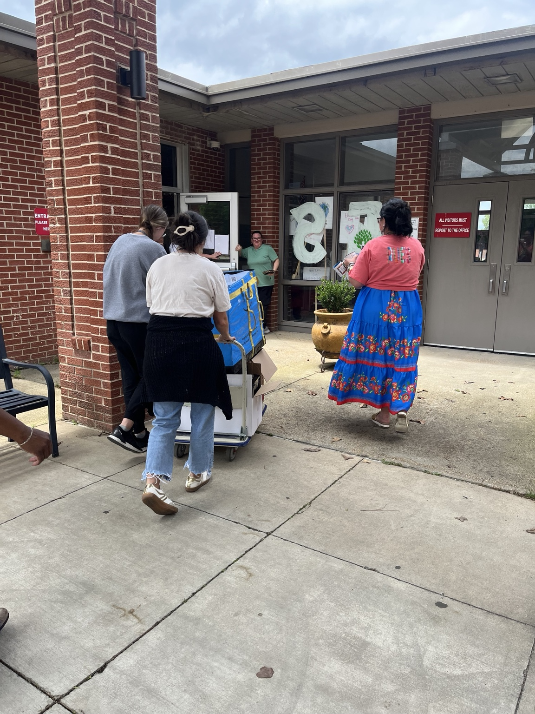

Schoolhouse Commons
Backpacks, supplies, and a brighter first day.Schoolhouse Commons provides backpacks, school supplies, and classroom support so students can arrive ready to learn and teachers can focus on teaching.
"Train up a child in the way he should go."Proverbs 22:6
What we provide
From backpacks and basic supplies to classroom kits and teacher support, Schoolhouse Commons partners with schools and community organizations to meet immediate needs and close gaps in access.
Student Backpacks
Durable backpacks filled with age-appropriate school supplies for students K–12.
Teacher Kits
Classroom starter kits, manipulatives, and basic materials to help teachers focus on instruction.
Events & Drives
Back-to-school events, supply drives, and volunteer-powered shopping experiences that preserve dignity and connection.

How to partner
Schools, churches, and community groups can request supplies, schedule drives, or refer families. Contact us to coordinate a distribution or donation drop-off.
Request Supplies
Fill out a request so we can prioritize the most urgent needs across our network.
Host a Drive
Partner with us to collect and sort donations locally — we provide volunteer coordination and logistics support.
Donate Supplies
New school supplies, backpacks, and classroom materials are always appreciated. Drop off at 110 Jones Lane.